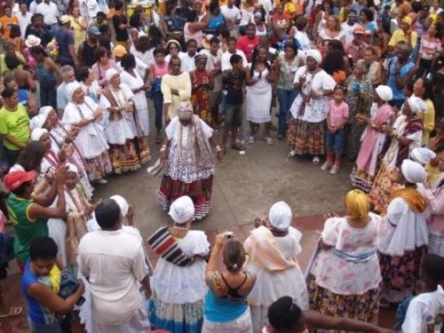
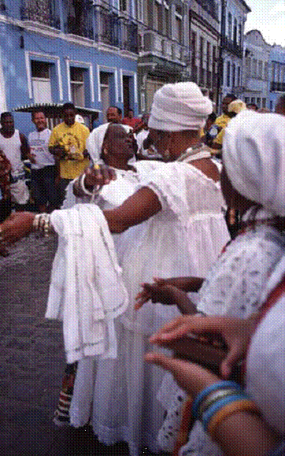
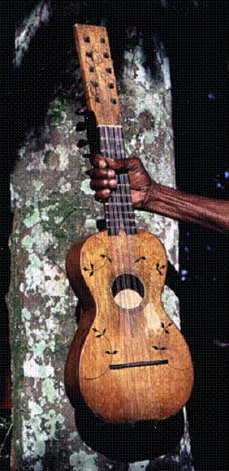

SAMBA DE RODA – объект культурного нематериального наследия ЮНЕСКО
Первое, что всплывает в воображении большинства обывателей при упоминании Бразилии, карнавала и бразильской культуры – самба. А так как капоэйра – не только единоборство, но в том числе и танцы, я решила копнуть именно в сторону танцев. Начну с самбы де роды. Именно ею иногда капоэйристы завершают роду. Так что же это такое самба ди рода, чем она отличается от всех остальных самб и почему её признали объектом культурного наследия ЮНЕСКО. Попытаюсь всё рассказать по порядку.
Итак. Сразу скажу, что самба ди рода получила статус объекта культурного нематериального наследия ЮНЕСКО в 2005 году.
Немного из истории. Корни самбы ди роды африканские, собственно по некоторым источникам капоэйра тоже пришла именно с африканского континента. Широкое распространение она получила в штате Баия, где скапливалось больше всего темнокожих рабов.
Слово «самба» происходит от слова „семба“. На африканском диалекте банту «семба» означает «пупок», который во многих афро-бразильских танцевальных формах символизирует интимность танца. Также отмечается, что слово самба – инфинитив глагола „кусамба“, который в буквальном переводе означает «молиться» или вызывать расположение богов при помощи ритма, песни и танца. Считается, что в основе бразильской самбы лежит традиционная музыка Анголы семба.
Особенности самбы ди роды. Самба де рода это единство музыкального аккомпанемента, пения, танца и праздника. Самба де рода имеет свои характерные черты. Первая и самая основная — участники располагаются кругом или подобием круга, отчего и произошло название самбы де рода (от порт. roda — круг);

Самба де рода исполняется исключительно в кругу! В танце доминируют женщины, в то время как музыкальное сопровождение на инструментах является прерогативой мужчин. Несмотря на то, что в танце основная роль принадлежит женщине, изредка мужчины также могут допускаться в круг.
Следующей характерной чертой самбы де рода является замена солирующей самбадейры (sambadeira). Для выбора замены исполнительница танца производит умбигаду или протягивает руки, указывая на следующую самбадейру, которая будет солировать в кругу. Умбигада ведет своё происхождение от народов банту и состоит в лёгком соприкосновении или ударе животом о живот (умбигус — по латыни — пупок).

Наиболее типичными инструментами (при их наличии) являются пандейру, тарелка-нож (кто-нибудь, знает, как это выглядит?), гитара. Основной ритм обозначается хлопаньем в ладоши участников, составляющих круг. Мужчины (sambadores) составляют часть круга, играют на инструментах и поют. В круге танцует солистка. Как и в обычной роде капоэйристов, песни (коридош и шулы) поются на португальском и они простые и короткие.
Одно из общепринятых условий самбы де рода — использование в танце пространства внутри круга. Другими словами: кто вошел в круг для танца, должен обойти круг (correr a roda). Обойти круг означает не танцевать на одном месте, но использовать всё пространство, ограниченное кругом. Самбадейра в танце движется обычно против часовой стрелки, физически приближаясь к каждому музыканту, показывая этим, что она танцует не только в ответ на его музыку, но также для него лично. При этом самбадейра благодарит музыканта за его аккомпанемент и показывает ему свои способности.
Почему самбу де рода Баии объявили культурным наследием ЮНЕСКО? А просто потому что в своём традиционном виде она исчезает. Ей на смену приходят другие разновидности самбы. Самба шула — один из наиболее ценных разновидностей самбы де рода. Почти полностью исчез её наиболее характерный инструмент – машете (это такая гитара). Машете используется только в разновидности самба де рода (самба шула) Баии и нигде более в Бразилии.

Дилма Ф. А. Сантана из Теодору Сампайу (Dilma F. A. Santana, Teodoro Sampaio): «Обязанность женщины, входящей в круг, состоит в том, чтобы в танце обойти круг и танцевать перед каждым музыкантом, перед гитарой и перед пандейру. Войти в круг, подпрыгнуть несколько раз и выйти из круга не является самбой. Молодёжь танцует в кругу не в ритме самбы де рода, а в ритме пагоде. Они путают и смешивают пагоде с самбой де рода. Это разные вещи. Танцуя самбу де рода, они должны пробежать по кругу, а не трястись на одном месте, как в пагоде".
В настоящее время самба разделилась на множество подстилей. Среди наиболее популярных — Carioca, Baion, Conga, Mesemba, Batucado и Carnivale. Вдобавок к этому самба существует в различных формах: Samba canção (песенная самба), Samba carnavalesca (карнавальная самба), Samba enredo (тематическая самба) и Samba de breque (рэп-самба).
Некоторые формы самбы (например, afoxé) до сих пор основаны исключительно на религиозных и культурных африканских корнях жанра, другие формы изменяются и пополняются новыми ритмами, смешиваются с ламбадой и самбой-регги.
В следующий раз, постараюсь раскопать подробнее о других видах афро-бразильских танцев, таких как coco de roda, afoxe, maracatu, culeita.
Источники http://samba-de-roda.ru/ и других открытых ресурсов.